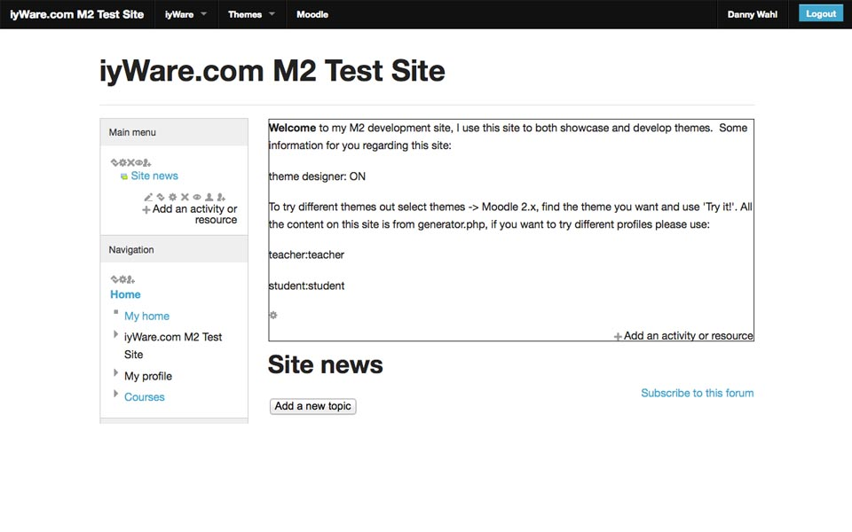
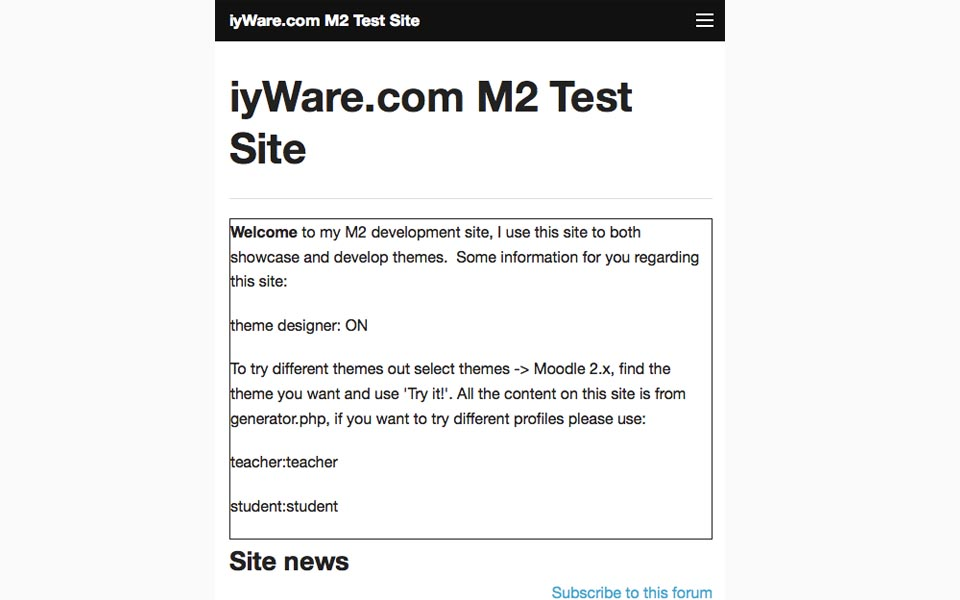
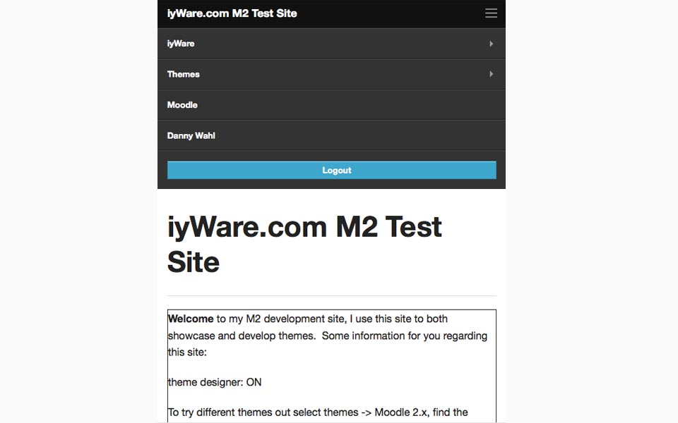

Foundation
You love Zurb’s Foundation. You love Moodle. How could you choose? Now you don’t have to. Introducing Moodle Foundation. Bottom-to-top Zurb goodness. Top-to-bottom Moodle functionality. Boo-ya.
Features
- Uses Moodle’s built-in jQuery
- Custom renderers make Foundation native
- Minimized collisions and CSS rules
- It’s Foundation, what more do you want?
- Custom CSS settings
- Foundation uses progressive enhancement, so users with older browsers aren’t left behind
- Built on the H5BP “Mobile first” design principles
- HTML5 goodness all over the place
- The best rtl support out there
Gallery



Download
This theme is available for download from github.
Documentation & Support
Support for this theme is provided at the moodle.org forums.